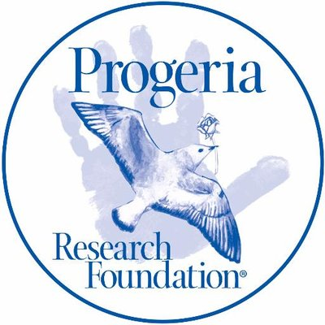

Le téléthon
L’équipe dirigée par le Professeur Nicolas Lévy démontre le potentiel thérapeutique d'une nouvelle molécule pour traiter la progéria. Cette équipe propose donc un "essai" aux atteints de la maladie. L'AFM-Téléthon soutiens finanierement l'éssaie proposé. Celui-ci à pour objectif d'évaluer la tolérance et l’efficacité de l’association pravastatine et acide zolédronique sur le poids, la taille et le métabolisme osseux chez 15 personnes atteintes de progéria, âgées de plus de 3 ans.
Pour chaque participant, l'essai dure 2 ans et comporte, outre la visite de sélection et la visite d'inclusion, une visite toutes les 6 semaines le 1er trimestre, puis tous les 3 mois et 6 mois. A chaque visite sont réalisés des examens de surveillance (poids, taille, prélèvement de sang,..) et une perfusion d'acide zolédronique. Chaque participant prend des comprimés de pravastatine tous les jours pendant le durée de l'essai.
Pour aider les malades et le financement vous pouvez faire un don en cliquant sur l'image à droite:
Diverses associations
Plusieurs associations existent, elles ont pour but d'aider les malades de la maladie de la Progéria. Elles sont souvent gérées par les membres de la famille d'un enfants malade.
En ce qui concerne la progéria, l’association la plus importante est la "progeria research foundation" (fondation de recherche pour la progeria). Elle fut créée en 1998, lorsque l’enfant du Dr Leslie Gordon et du Dr Scott Berns âgé de 22 mois fut diagnostiqué avec la progeria. Ces deux parents, aidés de leur proches créèrent la PRF, première association mondiale à but non-lucratif visant à collecter des fonds pour les recherches sur la progéria et à informer les patients ainsi que leur parents. Cette association a en effet une place très importante car c’est elle qui finance le plus toutes les recherches sur la progeria. Pour récolter tout cet argent, il y a tout d’abord les dons, mais également des produits en vente sur leur site tels que des calendriers, avec des photos d’enfants souffrant de la progeria, des cartes dessinées par les enfants eux-mêmes, des bracelets, des CD… De plus, certains parents ayant des enfants atteints de la progeria ont créé des sites internets et participent à la collecte de fonds qu’ils remettent entièrement à la fondation.
